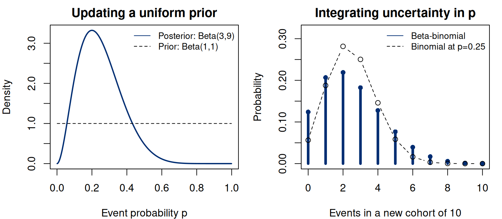
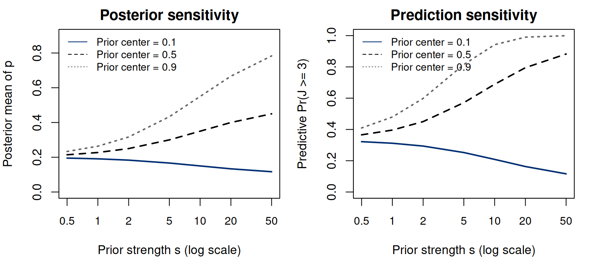
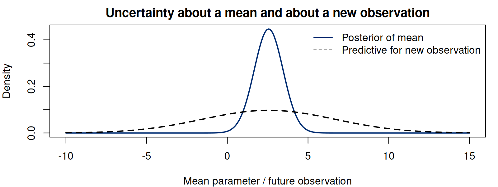
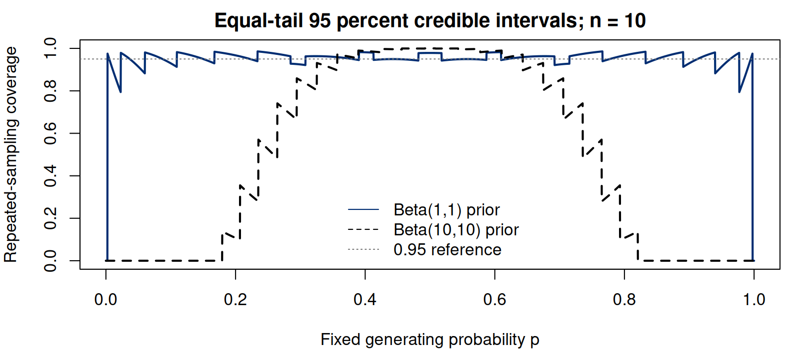

Notes on Statistical Inference
Chapter 8. Bayesian inference and predictive uncertainty
Confidence sets and tests evaluated procedures by repeating data collection at a fixed parameter. We now ask what a probability model can say about that parameter after the observed data are known. Bayesian inference combines the likelihood with a prior distribution expressing uncertainty before the current observations. Conditioning gives the posterior. A posterior mean summarizes a parameter; a predictive distribution describes a new observation; an action additionally requires the loss function discussed in Chapter 4.
We begin with the binary count, then consider counts accumulated over an exposure period and a continuous measurement with normal errors. In each conjugate model, prior and posterior belong to the same family. This makes the conditioning calculation visible and provides exact answers against which to check software. The same operations apply beyond conjugacy: specify the joint model, condition on what was observed, and integrate over parameter uncertainty when predicting.
The calculations use conditional probability, integration, and the laws of total expectation and variance from the earlier chapters. The Bayesian joint model lets us average over uncertainty about a parameter. When evaluating repeated-sampling performance, we can still hold that same population parameter fixed.
8.1 From a joint model to a posterior
Let denote the random data and their observed value. For a parameter , specify a sampling density or mass function and a prior probability measure . When the latter has density with respect to the chosen parameter measure, the joint density is (8.1) The marginal is the prior predictive distribution of the data. Provided , conditioning gives (8.2) Sums replace integrals for a discrete parameter. A prior need not claim that a physical parameter is repeatedly redrawn in nature; it is a component of the probability model used to represent uncertainty. Its implications still deserve scientific scrutiny.
In Chapter 2, factors constant in could be dropped when comparing likelihood values. They also cancel from a posterior ratio, but cannot be discarded when computing the probability of the observed data. For example, the binomial coefficient belongs in the prior predictive probability of a count, although it cancels when deriving that count’s posterior. Nor is a likelihood automatically a density over parameters. Declaring it normalized with respect to silently selects a prior measure, and a different parameterization generally changes that choice.
Bayesian updating also has a useful sequential interpretation. For two data batches conditionally independent given , the posterior after the first batch can serve as the prior for the second: multiplication by the two likelihoods in sequence gives the same posterior as analyzing both batches together. The observations must enter only once. Choosing a concentrated prior from the current observations and then treating that prior as externally fixed can count their information twice. Empirical Bayes methods estimate prior features from data, but require an explicit model and an assessment of the uncertainty introduced by that estimation. Sequential coherence is an algebraic property of a specified joint model; it does not justify reusing evidence without describing the dependence.
The posterior quantifies uncertainty conditional on the model and observations. To choose an action with loss , use the additional optimization (8.3) Under squared error and a finite second posterior moment, we expand around the posterior mean . The subscript distinguishes this mean from the prior predictive density : The cross term is zero, so the posterior mean minimizes this loss. Absolute error instead leads to a posterior median. A single posterior supports both decisions; the preferred summary depends on the question. For a nonlinear target , squared-error estimation uses , which need not equal . For instance, the posterior mean of is the square of the posterior mean of plus its posterior variance.
8.2 Beta updating and prediction beyond a point estimate
Retain the binary sampling model . A prior has density for , with . Multiplication by the likelihood gives (8.4) Here and denote posterior shape parameters. This is conjugacy: updating stays within the same family. Its convenience does not establish that the model of exchangeable binary observations is appropriate.
Posterior moments follow by recognizing another beta integral. For a nonnegative integer , . The cases give (8.5) An equal-tail interval uses posterior quantiles at 0.025 and 0.975, leaving probability 0.025 below and above its endpoints. Equal tails are a choice, not a requirement of Bayesian inference. Other sets can have the same posterior probability and different lengths, especially for asymmetric posteriors. The quantile construction is transparent here and transforms directly under a strictly increasing change of parameter.
For a numerical return to the opening binary-count example, take . These counts differ from the twenty observations used in the testing illustration. With a uniform prior, the posterior is . Its mean is 0.25, whereas the observed fraction is 0.20. More of the answer is retained by reporting the equal-tail 95% credible interval and, for example, . The interval is wide because ten observations leave substantial uncertainty. The probability statement concerns under the posterior; it is not a probability that the realized count exceeded its observed value. Neither 0.30 nor the event used below is a clinical decision threshold in this example.
Now let count events in a new cohort of size , conditionally independent of the original observations given the same . Integrating the binomial probability over the posterior yields (8.6) This beta-binomial distribution includes both outcome variability at a given and uncertainty about . Total expectation and total variance give (8.7) For , predictive mean is 2.5 and variance is 3.173077. A plug-in has the same mean but variance 1.875. Using the posterior mean as though it were known therefore understates the uncertainty in the future count.
For one fresh binary outcome, the predictive event probability does equal the posterior mean. For several outcomes, integrating over their shared changes the joint distribution. If are two new outcomes, conditional independence gives . Subtracting therefore gives predictive covariance . With outcomes there are ordered covariance terms, so predictive variance can also be written The first term is the plug-in binomial variance; the second explains exactly what that calculation omits. Figure 8.1 shows the resulting difference in count distributions.
The following calculation uses log beta functions to avoid unnecessarily multiplying small numbers. Summing the resulting probabilities verifies normalization and the moment formulas.
Run the complete R example
Dependencies: base R. This complete block includes the data, setup and calculations. Run it in a fresh R session. Short code excerpts above explain individual steps; this block supplies their shared setup. Figures and tables are written to a temporary directory.
Complete R example
# Complete R example. Synthetic data; no external files are required.
local({
previous.directory <- getwd()
example.directory <- tempfile("biomedical-example-")
dir.create(example.directory)
setwd(example.directory)
on.exit(setwd(previous.directory))
dir.create("generated",showWarnings=FALSE)
# conjugate posteriors and predictive distributions.
# No hidden data or packages: all examples use base R and explicit probability laws.
out <- "generated"; out.dir <- out
dir.create(out,recursive=TRUE,showWarnings=FALSE)
close.to <- function(x,y,tol=1e-10) stopifnot(max(abs(x-y))<tol)
bb <- function(j,m,a,b) exp(lchoose(m,j)+lbeta(a+j,b+m-j)-lbeta(a,b))
n <- 10L; k <- 2L; m <- 10L; alpha <- 1; beta <- 1
A <- alpha+k; B <- beta+n-k; j <- 0:m
post.mean <- A/(A+B); post.var <- A*B/((A+B)^2*(A+B+1))
post.ci <- qbeta(c(.025,.975),A,B)
pred <- bb(j,m,A,B); predicted <- sum(pred[j>=3])
pred.mean <- m*post.mean; pred.var <- m*A*B*(A+B+m)/((A+B)^2*(A+B+1))
close.to(sum(pred),1);close.to(sum(j*pred),pred.mean)
close.to(sum((j-pred.mean)^2*pred),pred.var)
close.to(integrate(function(p) p*dbeta(p,A,B),0,1)$value,post.mean)
close.to(pbeta(post.ci[2],A,B)-pbeta(post.ci[1],A,B),.95)
for(h in j) close.to(integrate(function(p) dbinom(h,m,p)*dbeta(p,A,B),0,1,rel.tol=1e-12)$value,pred[h+1],1e-9)
exact <- data.frame(quantity=c('Posterior mean of p','Posterior variance of p','Predictive mean of J','Predictive variance of J','Predictive P(J >= 3)'),
value=c(post.mean,post.var,pred.mean,pred.var,predicted))
write.csv(exact,file.path(out,'ch06-exact.csv'),row.names=FALSE)
writeLines(c('\\begin{table}[htbp]','\\centering\\begin{tabular}{lr}\\toprule',
'Quantity & Exact value\\\\\\midrule',
sprintf('%s & %.6f\\\\',c('Posterior mean of $p$','Posterior variance of $p$','Predictive mean of $J$','Predictive variance of $J$','Predictive $\\Prb(J\\ge3\\mid K=2)$'),exact$value),
'\\bottomrule\\end{tabular}',
'\\caption{Exact posterior and predictive summaries for $n=10$, $k=2$, $\\alpha=\\beta=1$, and $m=10$.}',
'\\end{table}'),file.path(out,'ch06-exact.tex'))
# Every row is an R-evaluated prior/posterior combination used by the reader.
grid <- expand.grid(center=seq(.05,.95,by=.05),strength=c(.5,1,2,5,10,20,50))
grid$alpha <- grid$center*grid$strength; grid$beta <- (1-grid$center)*grid$strength
grid$posterior.mean <- (grid$alpha+k)/(grid$strength+n)
grid$lower <- qbeta(.025,grid$alpha+k,grid$beta+n-k)
grid$upper <- qbeta(.975,grid$alpha+k,grid$beta+n-k)
grid$predicted <- vapply(seq_len(nrow(grid)),function(r) sum(bb(3:m,m,grid$alpha[r]+k,grid$beta[r]+n-k)),0.0)
write.csv(grid,file.path(out,'ch06-prior-strength.csv'),row.names=FALSE)
predictive.grid <- do.call(rbind,lapply(seq_len(nrow(grid)),function(r){data.frame(center=grid$center[r],strength=grid$strength[r],events=j,probability=bb(j,m,grid$alpha[r]+k,grid$beta[r]+n-k))}))
stopifnot(nrow(grid)==133L,nrow(predictive.grid)==1463L,
all(is.finite(as.matrix(grid))),all(grid$lower<grid$upper))
close.to(vapply(split(predictive.grid$probability,interaction(predictive.grid$center,predictive.grid$strength)),sum,0.0),rep(1,133))
write.csv(predictive.grid,file.path(out,'ch06-prior-strength-predictive.csv'),row.names=FALSE)
writeLines(c('center: prior mean probability, 0.05 to 0.95',
'strength: alpha+beta, one of 0.5,1,2,5,10,20,50',
'alpha,beta: positive prior beta shapes',
'posterior.mean: E(p | K=2,n=10)',
'lower,upper: equal-tail 95 percent posterior quantiles',
'predicted: posterior predictive Pr(J >=3), m=10',
'predictive table events: count 0,...,10; probability: normalized beta-binomial mass'),file.path(out,'ch06-prior-strength-schema.txt'))
close.to(sum(bb(0:2,n,1,1)),3/11)
# Exposure-rate example; check normalized mass by direct integration.
x <- c(2,0,4,1); exposure <- c(1,.5,2,1.5); a <- 2; b <- 1
Ag <- a+sum(x); Bg <- b+sum(exposure); u <- 2
rate.mean <- Ag/Bg; rate.var <- Ag/Bg^2; rate.ci <- qgamma(c(.025,.975),shape=Ag,rate=Bg)
ng.prob <- Bg/(Bg+u); ng.mean <- u*rate.mean; ng.var <- ng.mean+u^2*rate.var
for(h in 0:12){num <- integrate(function(lambda) dpois(h,u*lambda)*dgamma(lambda,shape=Ag,rate=Bg),0,Inf,rel.tol=1e-11)$value;close.to(num,dnbinom(h,size=Ag,prob=ng.prob),1e-9)}
close.to(rate.mean,1.5);close.to(rate.var,.25);close.to(ng.mean,3);close.to(ng.var,4)
close.to(Bg/(Bg+u),(1000*b+sum(1000*exposure))/(1000*b+sum(1000*exposure)+1000*u))
# Known-variance normal example; complete-square normalization and convolution.
nn <- 16; xbar <- 3.2; sigma2 <- 16; m0 <- 0; tau2 <- 4
vn <- 1/(1/tau2+nn/sigma2); mn <- vn*(m0/tau2+nn*xbar/sigma2)
C <- m0^2/tau2+nn*xbar^2/sigma2-mn^2/vn
zz <- seq(-10,15,length.out=201)
close.to((zz-m0)^2/tau2+nn*(zz-xbar)^2/sigma2,(zz-mn)^2/vn+C,1e-10)
close.to(mn,2.56);close.to(vn,.8)
normal.ci <- qnorm(c(.025,.975),mn,sqrt(vn))
normal.predict.ci <- qnorm(c(.025,.975),mn,sqrt(sigma2+vn))
for(z in c(-5,0,3,8)){
convolution <- integrate(function(mu) dnorm(z,mu,sqrt(sigma2))*dnorm(mu,mn,sqrt(vn)),-Inf,Inf,rel.tol=1e-11)$value
close.to(convolution,dnorm(z,mn,sqrt(sigma2+vn)),1e-9)
}
coverage <- function(p,a,b){lo<-qbeta(.025,a+0:n,b+n-0:n);hi<-qbeta(.975,a+0:n,b+n-0:n);vapply(p,function(z) sum(dbinom(0:n,n,z)*(lo<=z & z<=hi)),0.0)}
close.to(coverage(c(.15,.5),1,1),c(pbinom(3,n,.15),sum(dbinom(2:8,n,.5))))
close.to(coverage(c(.15,.5),10,10),c(0,1))
# Prior-averaged coverage: finite beta integrals, not a coarse grid quadrature.
for(ab in list(c(1,1),c(10,10))){aa<-ab[1];bb0<-ab[2];kk<-0:n;lo<-qbeta(.025,aa+kk,bb0+n-kk);hi<-qbeta(.975,aa+kk,bb0+n-kk);prior.mass<-bb(kk,n,aa,bb0);avg<-sum(prior.mass*(pbeta(hi,aa+kk,bb0+n-kk)-pbeta(lo,aa+kk,bb0+n-kk)));close.to(avg,.95)}
pg <- seq(0,1,length.out=4001)
coverage.grid <- data.frame(p=pg,uniform=coverage(pg,1,1),concentrated=coverage(pg,10,10))
write.csv(coverage.grid,file.path(out,'ch06-coverage-grid.csv'),row.names=FALSE)
# Independent posterior and conditional predictive draws.
set.seed(20261006); R <- 200000L
p.draw <- rbeta(R,A,B); J <- rbinom(R,m,p.draw)
rate.draw <- rgamma(R,shape=Ag,rate=Bg); PJ <- rpois(R,u*rate.draw)
mu.draw <- rnorm(R,mn,sqrt(vn)); Xnew <- rnorm(R,mu.draw,sqrt(sigma2))
raw <- list(p.draw,as.numeric(J>=3),PJ,as.numeric(PJ==0),Xnew)
mc <- data.frame(quantity=c('Posterior mean of p','Predictive P(J >= 3)','Poisson predictive mean','Poisson predictive P(J = 0)','Normal predictive mean'),
exact=c(post.mean,predicted,ng.mean,dnbinom(0,Ag,ng.prob),mn),
estimate=vapply(raw,mean,0.0),mcse=vapply(raw,sd,0.0)/sqrt(R))
rb <- 1-pbinom(2,m,p.draw)
rb.check <- data.frame(estimator=c('Indicator','Conditional probability'),estimate=c(mean(J>=3),mean(rb)),mcse=c(sd(as.numeric(J>=3)),sd(rb))/sqrt(R))
write.csv(mc,file.path(out,'ch06-monte-carlo.csv'),row.names=FALSE)
write.csv(rb.check,file.path(out,'ch06-monte-carlo-rao-blackwell.csv'),row.names=FALSE)
writeLines(c('\\begin{table}[htbp]','\\centering\\begin{tabular}{lrrr}\\toprule',
'Quantity & Exact & Monte Carlo & MCSE\\\\\\midrule',
sprintf('%s & %.6f & %.6f & %.6f\\\\',c('Posterior mean of $p$','Predictive $\\Prb(J\\ge3)$','Poisson predictive mean','Poisson predictive $\\Prb(J=0)$','Normal predictive mean'),mc$exact,mc$estimate,mc$mcse),
'\\bottomrule\\end{tabular}',
'\\caption{Monte Carlo approximations with 200,000 independent replicates and seed 20261006. MCSE measures simulation noise, not posterior uncertainty.}',
'\\end{table}'),file.path(out,'ch06-monte-carlo.tex'))
plot.pair <- function(name,fun,width=8,height=3.5){cairo_pdf(file.path(out,paste0(name,'.pdf')),width=width,height=height);fun();dev.off();png(file.path(out,paste0(name,'.png')),width=1600,height=round(1600*height/width),res=200);fun();dev.off()}
plot.pair('ch06-beta-predictive',function(){par(mfrow=c(1,2),mar=c(4,4,2,1));pp<-seq(.001,.999,length.out=501);plot(pp,dbeta(pp,A,B),type='l',lwd=2,col='#002D72',xlab='Event probability p',ylab='Density',main='Updating a uniform prior');lines(pp,dbeta(pp,1,1),lty=2);legend('topright',c('Posterior: Beta(3,9)','Prior: Beta(1,1)'),lty=c(1,2),col=c('#002D72','black'),bty='n',cex=.85);plot(j,pred,type='h',lwd=4,col='#002D72',xlab='Events in a new cohort of 10',ylab='Probability',ylim=c(0,.32),main='Integrating uncertainty in p');points(j,pred,pch=16,col='#002D72');lines(j,dbinom(j,m,post.mean),type='b',pch=1,lty=2);legend('topright',c('Beta-binomial','Binomial at p=0.25'),lty=c(1,2),col=c('#002D72','black'),bty='n',cex=.85)})
plot.pair('ch06-prior-sensitivity',function(){par(mfrow=c(1,2),mar=c(4,4,2,1));ss<-c(.5,1,2,5,10,20,50);centers<-c(.1,.5,.9);colors<-c('#002D72','black','#666666');plot(range(ss),c(0,.9),type='n',log='x',xaxt='n',xlab='Prior strength s (log scale)',ylab='Posterior mean of p',main='Posterior sensitivity');axis(1,at=ss,labels=as.character(ss),cex.axis=.9);for(z in 1:3)lines(ss,(k+centers[z]*ss)/(n+ss),lty=z,col=colors[z],lwd=2);legend('topleft',paste('Prior center =',centers),lty=1:3,col=colors,bty='n',cex=.85);plot(range(ss),c(0,1),type='n',log='x',xaxt='n',xlab='Prior strength s (log scale)',ylab='Predictive Pr(J >= 3)',main='Prediction sensitivity');axis(1,at=ss,labels=as.character(ss),cex.axis=.9);for(z in 1:3)lines(ss,vapply(ss,function(s)sum(bb(3:m,m,k+centers[z]*s,n-k+(1-centers[z])*s)),0.0),lty=z,col=colors[z],lwd=2);legend('topleft',paste('Prior center =',centers),lty=1:3,col=colors,bty='n',cex=.85)})
plot.pair('ch06-normal-predictive',function(){par(mar=c(4,4,2,1));z<-seq(-10,15,length.out=601);plot(z,dnorm(z,mn,sqrt(vn)),type='l',col='#002D72',lwd=2,xlab='Mean parameter / future observation',ylab='Density',main='Uncertainty about a mean and about a new observation');lines(z,dnorm(z,mn,sqrt(sigma2+vn)),lty=2,lwd=2);legend('topright',c('Posterior of mean','Predictive for new observation'),lty=c(1,2),col=c('#002D72','black'),bty='n')},width=8,height=3)
plot.pair('ch06-coverage',function(){par(mar=c(4,4,2,1));plot(pg,coverage.grid$uniform,type='l',lwd=2,col='#002D72',ylim=c(0,1),xlab='Fixed generating probability p',ylab='Repeated-sampling coverage',main='Equal-tail 95 percent credible intervals; n = 10');lines(pg,coverage.grid$concentrated,lty=2,lwd=2);abline(h=.95,lty=3,col='#777777');legend('bottom',c('Beta(1,1) prior','Beta(10,10) prior','0.95 reference'),lty=c(1,2,3),col=c('#002D72','black','#777777'),bty='n')},width=8,height=3.5)
writeLines(capture.output(sessionInfo()),file.path(out,'ch06-session-info.txt'))
print(exact);print(mc);print(rb.check)
cat("\nSelected numerical results\n")
for (candidate in c("reader", "summary", "summary.mc", "perf", "comparison", "route.comparison", "test", "tab", "exact", "workflow.ci", "coef.tab", "evaluation.table")) {
if (exists(candidate, inherits=FALSE)) {
value <- get(candidate, inherits=FALSE)
if (is.data.frame(value) || is.matrix(value)) { cat(candidate, "\n"); print(utils::head(value,8)) }
}
}
cat("R", as.character(getRversion()), "\n")
})
This excerpt shows a step inside the preceding complete R example; it uses that block’s data and setup.
bb <- function(j,m,a,b) {
exp(lchoose(m,j)+lbeta(a+j,b+m-j)-lbeta(a,b))
}
A <- 1+2; B <- 1+10-2; m <- 10; j <- 0:m
pred <- bb(j,m,A,B)
sum(pred) # 1
sum(j*pred) # 2.5
sum((j-2.5)^2*pred) # 3.173076923
sum(pred[j>=3]) # 0.450243255
qbeta(c(.025,.975),A,B) # 0.060217734, 0.517755852

| Quantity | Exact value |
|---|---|
| Posterior mean of | 0.250000 |
| Posterior variance of | 0.014423 |
| Predictive mean of | 2.500000 |
| Predictive variance of | 3.173077 |
| Predictive | 0.450243 |
8.3 Prior sensitivity and predictive checking
The preceding calculations used a uniform prior. To see what that choice contributes, hold the observed count fixed and vary the prior. A useful beta parameterization separates prior center from concentration : set , , where and . Then (8.8) The concentration behaves like a prior sample size in this mean formula, but should not be presented as a literal set of previously observed patients. For fixed , changing changes both location and predictive implications. For fixed , large asserts increasingly precise prior knowledge.
Figure 8.2 varies these assumptions while holding the data at two events in ten observations. The second panel displays for ten future observations. A conclusion about a future event can be sensitive even when a point estimate appears unremarkable. Sensitivity analysis should use scientifically defensible alternatives and report consequential changes, rather than select the prior that produces a preferred answer.
The complete R example evaluates 133 combinations: centers and strengths . Each row contains the two prior shapes, posterior mean, equal-tail interval, and predictive probability of at least three future events. A second table records every predictive count probability. These finite grids support inspection; they do not optimize a prior or establish robustness outside the values examined.


Prior predictive checks ask what observations were plausible before seeing the data. With the uniform prior, is uniform on , so . Under a more concentrated prior, that probability is 0.095638. This selected lower-tail comparison exposes the latter prior’s preference for counts near five. It is not, by itself, a universal rejection rule; the direction and discrepancy were chosen explicitly.
Posterior predictive checks instead simulate replicated observations from under the original sampling design, then compare a discrepancy with the observed one. A new-cohort prediction and a replicated-data check can use the same probability formula, but serve different purposes. Data used for fitting also inform the reference distribution in a posterior predictive check, so its tail probability does not generally have a uniform null distribution like an exactly calibrated classical continuous -value. Moreover, a count-only model cannot check patterns discarded when reducing observations to a count, such as temporal clustering.
For the uniform-prior example, a replicated count of size ten has the same law as the fresh count. Its posterior predictive probability of at most two events is 0.549757. A count near the observed two is therefore unsurprising after fitting, even though the prior predictive probability of at most two was 0.272727. This is an instructive check but not independent confirmation: the count informed the posterior used to judge it. If the scientific concern is dependence or subgroup heterogeneity, retain relevant observation labels and choose a discrepancy that can reveal it.
8.4 Counts with exposure: the gamma–Poisson model
We now change the observation: each record contains a count accumulated over a known exposure, rather than one binary outcome. This is a separate example. Suppose independently, where known exposure may differ between observations. The shared is an event rate per exposure unit. Write and . Use a gamma prior with shape and rate : (8.9) Its mean is and variance . An equivalent scale parameterization uses scale . Stating the density prevents an otherwise consequential ambiguity.
The likelihood kernel is , so (8.10) again using a rate. Counts with exposures have . A prior gives a posterior, mean 1.5, variance 0.25, and equal-tail 95% interval . The prior rate has exposure units; adding it to is dimensionally meaningful. Changing the exposure unit requires transforming both the numerical event rate and its prior.
For positive total exposure, posterior mean can also be written . It combines prior mean rate and observed rate using their exposure weights. Here observed rate is , prior mean is 2, and the result is 1.5. This parallels the beta mean’s weighted average, while making the weights appropriate to a rate experiment. Ten short exposure periods need not carry the same information about a Poisson rate as ten long ones; the number of records alone is not the relevant weight in this model.
For future exposure , let , conditionally independent of the observed data given . Direct integration gives (8.11) This is R’s negative binomial parameterization, with size and success probability . For example:
This excerpt shows a step inside the preceding complete R example; it uses that block’s data and setup.
dnbinom(j, size = Ag, prob = Bg/(Bg+u))Its moments are (8.12) At , these are 3 and 4. Predictive zero probability is 0.075085, compared with under a plug-in Poisson distribution. Posterior uncertainty changes tail probabilities as well as variance.
The common-rate assumption enables aggregation through . It does not demonstrate that individual rates are equal or observations independent. Heterogeneity or clustering calls for checking the original observation structure and possibly extending the model. A gamma mixing distribution here describes uncertainty about a shared rate; it should not automatically be interpreted as a distribution of different individuals’ rates.
This excerpt shows a step inside the preceding complete R example; it uses that block’s data and setup.
Ag <- 2 + sum(c(2,0,4,1))
Bg <- 1 + sum(c(1,.5,2,1.5))
u <- 2
qgamma(c(.025,.975),shape=Ag,rate=Bg)
# 0.685895516, 2.627198203
dnbinom(0,size=Ag,prob=Bg/(Bg+u))
# 0.0750846868.5 A normal mean with known observation variance
For a separate continuous-outcome example, we return to the normal mean used in the sampling and confidence calculations. Suppose are independent observations, with known, and with . The identity isolates the part depending on . Consequently, Define (8.13) Expanding the two squared terms gives coefficient on and coefficient on . Thus the expression in braces equals , where does not depend on . Normalizing gives (8.14) This derivation explains why precisions, the reciprocals of variances, add. The posterior mean weights prior center and sample mean by their precisions, not by arbitrary preference.
The prior also implies a distribution for the sample mean before observing it: . This offers an interpretable way to assess a proposed : ask whether the resulting range of plausible sample means fits existing knowledge. A diffuse prior on one parameter scale is not a substitute for this assessment. A small prior variance asserts substantial information even when its center has been chosen casually.
For , , , , and , the posterior is . Its equal-tail 95% interval is . A fresh observation, conditionally independent of the observed data given , includes another observation error: (8.15) The corresponding predictive interval is . A narrow interval for an average does not imply accurate prediction of each individual observation. As increases, posterior variance can approach zero while predictive variance for one individual approaches .


8.6 Credible probability and repeated-sampling coverage
The intervals above summarize posterior uncertainty after a fixed set of observations. To compare them with the confidence procedures developed earlier, we must change what is held fixed and what is repeated. A credible set with posterior probability 0.95 satisfies under the specified model. Frequentist coverage instead fixes a generating parameter and repeats data collection. These are different conditioning statements, even when some models produce numerically identical intervals.
For the binomial example, construct equal-tail beta intervals for every possible count. At a fixed , their exact repeated-sampling coverage is (8.16) At , the uniform-prior procedure covers with probability 0.950030, whereas the procedure has coverage zero: none of its possible intervals includes 0.15. At , the latter covers with probability one. Its intervals still each contain 95% posterior probability. These facts are compatible because the posterior and repeated-sampling calculations average over different quantities.
For a proper prior, posterior credibility does imply a prior-averaged identity: (8.17) The outer expectation uses the prior predictive distribution. This is a calibration statement about the joint model, not a uniform guarantee over fixed parameter values. At boundary values , continuous beta equal-tail intervals never include the true value; these points have zero prior probability. Boundary behavior should be considered explicitly when such values are scientifically plausible.
A continuous beta prior can put substantial probability near zero, but it assigns no probability to exactly. If a scientific question distinguishes a structurally impossible event from a merely rare one, that distinction needs a model capable of expressing it, such as a separate point mass at zero. Changing the prior’s support is a substantive modeling decision, not a numerical adjustment to repair an interval plot.
This excerpt shows a step inside the preceding complete R example; it uses that block’s data and setup.
coverage <- function(p,a,b,n=10) {
lo <- qbeta(.025,a+0:n,b+n-0:n)
hi <- qbeta(.975,a+0:n,b+n-0:n)
vapply(p,function(z) sum(dbinom(0:n,n,z)*(lo<=z & z<=hi)),0.0)
}
coverage(c(.15,.5),1,1) # 0.950030201, 0.978515625
coverage(c(.15,.5),10,10) # 0, 1

8.7 Improper priors and numerical approximation
A nonnegative function with infinite integral is an improper prior; it is not a probability distribution. It can sometimes produce a proper posterior, but propriety must be checked. For the known-variance normal model, on yields the integrable kernel when , hence .
In contrast, yields a kernel that is integrable only when . All failures or all successes produce an improper posterior. A computer evaluating a finite grid away from zero and one can conceal the divergent integral. Further, an improper prior has an arbitrary multiplicative constant, so it does not provide an ordinary normalized prior predictive distribution or an unambiguous marginal likelihood for model comparison.
For the proper conjugate examples, exact integration and simulation offer complementary ways to compute a posterior expectation. Draw a parameter from its posterior, then draw a future outcome conditionally on that parameter. Repeating these two steps independently samples the predictive distribution. For an expectation of , the Monte Carlo estimate is the average of the simulated values; its estimated standard error is their sample standard deviation divided by , where is the number of repetitions. The table uses 200,000 repetitions for several quantities already calculated analytically.
| Quantity | Exact | Monte Carlo | MCSE |
|---|---|---|---|
| Posterior mean of | 0.250000 | 0.250181 | 0.000269 |
| Predictive | 0.450243 | 0.451930 | 0.001113 |
| Poisson predictive mean | 3.000000 | 3.003785 | 0.004481 |
| Poisson predictive | 0.075085 | 0.074900 | 0.000589 |
| Normal predictive mean | 2.560000 | 2.554499 | 0.009161 |
For the probability , one implementation averages the indicators . Another averages their conditional expectations . Both target the same quantity by iterated expectation. The second avoids the extra binomial draw and has no greater variance per independent posterior draw, by the conditional-variance decomposition. This is the conditional-expectation variance reduction used in the likelihood chapter. Increasing reduces numerical noise while leaving the posterior uncertainty from the observed study unchanged. Dependent MCMC draws require a different standard-error calculation because the variance of an average then includes serial covariances.
8.8 Exercises
Parameter uncertainty and new outcomes. Let and . We observe . Given , let be new independent observations, conditionally independent of , and set .
Derive the normalized posterior density of and its mean and variance.
Derive the predictive mass function of , then obtain its mean and variance by total expectation and total variance.
Find and . Explain why they can be positive although the new observations are independent given .
Compare with the variance from a plug-in model. Identify exactly which uncertainty the plug-in calculation omits.
Rates, exposure and units. Suppose independently, where the known positive exposures are and the observed counts are . Use a gamma prior with shape and rate : for .
Derive and normalize the posterior of .
A new count is conditionally independent of the observed counts, with . Integrate out to derive its predictive mass function, mean, variance and probability of zero.
Express every exposure in units whose numerical values are times larger, so and . Derive the corresponding transformation of and the gamma rate parameter. Show that the predictive count distribution is unchanged.
An uncertain mean and a future average. Let be independent observations, with known , and let with .
Complete the square in the posterior kernel. State the posterior mean , variance , and the term independent of in the completed-square identity.
Let be the average of new observations, conditionally independent of the original data given . Derive its posterior predictive distribution.
For , , , , , and , calculate the posterior variance of and predictive variance of the new average. Explain why they differ.
At fixed , derive the posterior limit as . With the proper prior fixed and under the stated sampling model, derive the limit of the predictive variance for fixed . Does accurate estimation of make future observation variation disappear?
Credibility and repeated-sampling coverage. For , consider each of the proper priors and . After count , define the closed equal-tail posterior interval using beta quantiles and .
Write the exact finite-sum expression for and evaluate it at and for both priors. Use beta quantiles and binomial probabilities; simulation is unnecessary.
For a general proper prior and sampling model, suppose has posterior probability for marginal-almost every data value. Prove by conditioning in two orders.
Explain why the identity in the second part does not imply coverage at every fixed parameter. State separately what is conditioned on in a credible-probability statement and in a repeated-sampling coverage statement.